Organisms no page imports any more. Kept for reference; do not design with them. 21 legacy. Rendered from Storybook on the app background (#f4f4f4). Generated by tools/build-canvases.js; do not edit by hand.
legacy · no screen uses itpackages/ui/organisms/AgendaTaskList
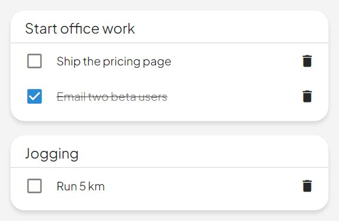
Default
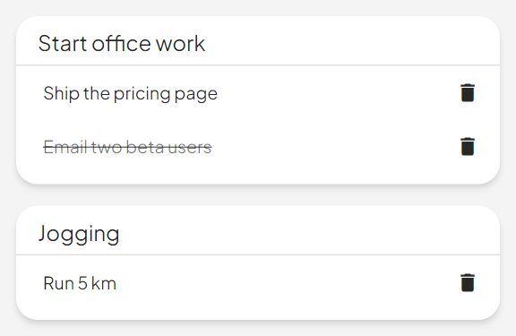
Read Only Checkboxes
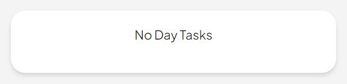
Empty
O02
CircadianCycle
legacy · no screen uses itpackages/ui/organisms/CircadianCycle
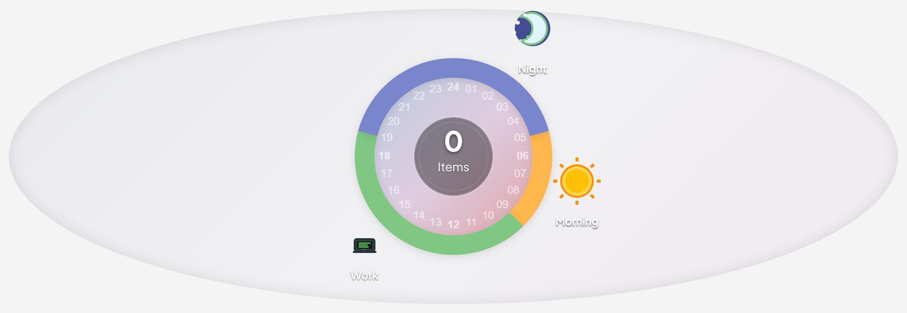
Default
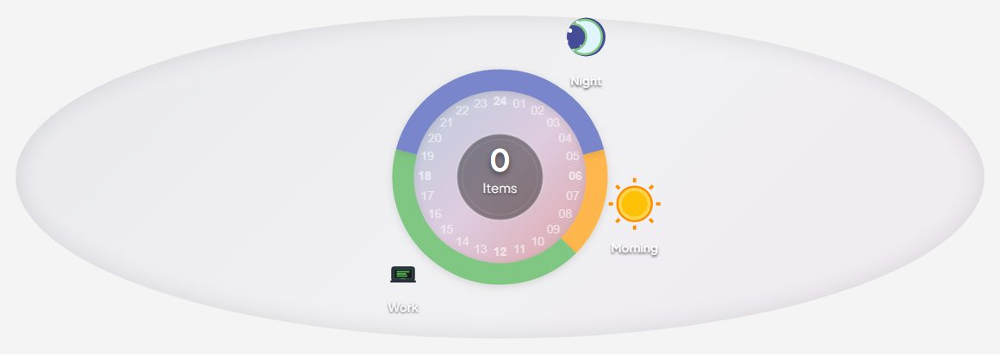
Small
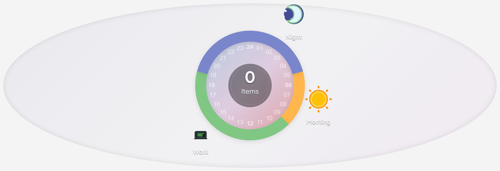
Large
O03
CurrentTaskCard
legacy · no screen uses itpackages/ui/organisms/CurrentTaskCard
Forward GoalItemList's two-argument toggle-goal-display-dialog event up to the dashboard. Method binding (vs. an inline arrow) is required because Vue 2 templates lose `this` inside arrow function expressions, leading to `Cannot read properties of undefined (reading '_events')` on $emit.
With All Goals
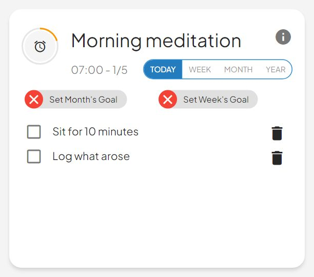
Missing Week And Month
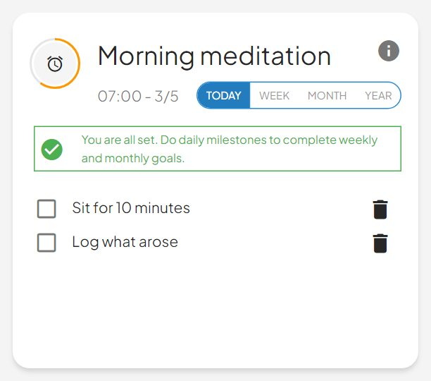
Event Execution
O04
FamilyUserHistory
legacy · no screen uses itpackages/ui/organisms/FamilyUserHistory
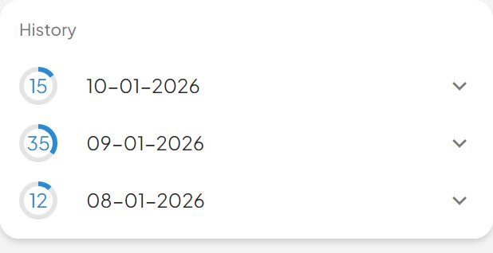
Default
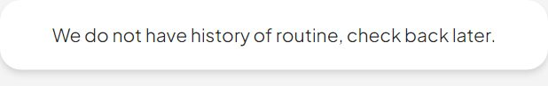
Empty History
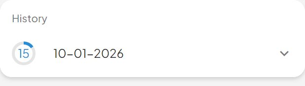
Single Day
O05
FullscreenDialog
legacy · no screen uses itpackages/ui/organisms/FullscreenDialog
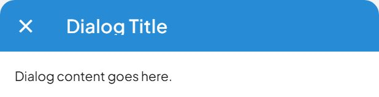
Default
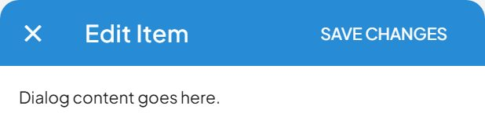
With Save
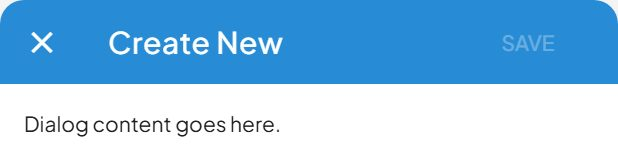
Save Disabled
O06
GoalItemList
legacy · no screen uses itpackages/ui/organisms/GoalItemList
Ask the parent to toggle a sub-task. Emits intent only. `subTasks` is passed so the container can build an optimistic response for the whole list — the checkbox still flips instantly, but the write goes through Apollo instead of `$set`-ing the cached SubTaskItem, which is what used to desynchronise the store from the rendered result.
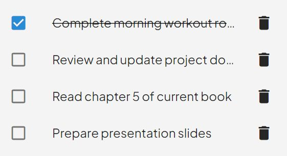
DefaultEditable
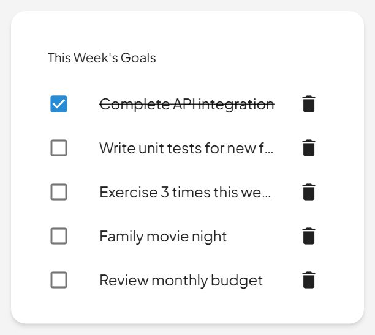
Weekly Goal Items
O07
GoalStatusChips
legacy · no screen uses itpackages/ui/organisms/GoalStatusChips
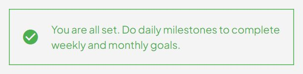
All Goals Set
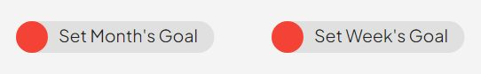
No Goals Set
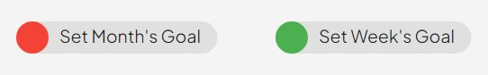
Week Goal Only
O08
GoalsFilterTime
legacy · no screen uses itpackages/ui/organisms/GoalsFilterTime
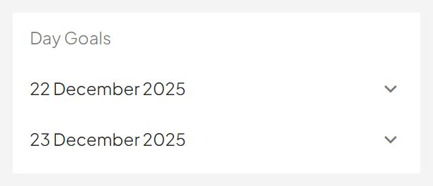
Day View
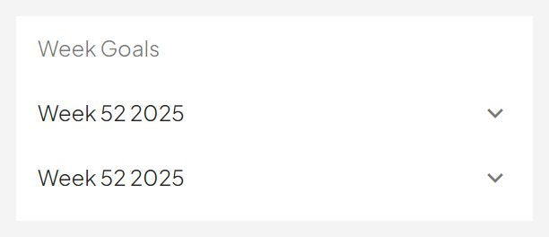
Week View
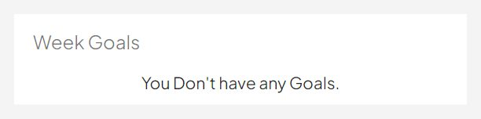
Empty State
O09
NewGoalSheet
legacy · no screen uses itpackages/ui/organisms/NewGoalSheet
The new-goal sheet (Goals.dc.html § sheetOpen) — a phone bottom sheet and a 500px centred dialog, which is `ResponsiveSheet` with the per-page width override chassis.md records for Goals.
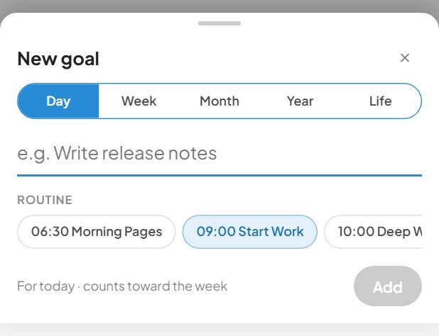
Phone
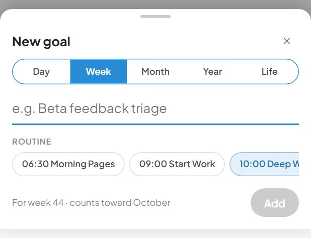
Phone Week
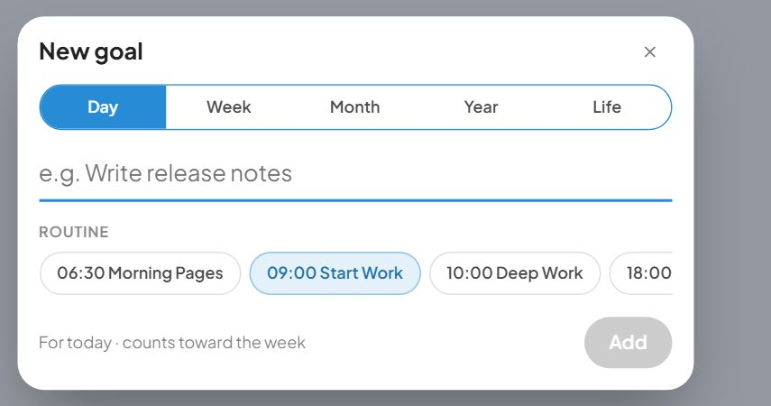
Desktop
O10
NextSteps
legacy · no screen uses itpackages/ui/organisms/NextSteps
Default
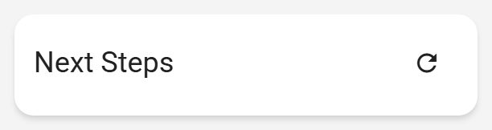
With TitleWith Ai Suggestion
O11
PeriodToggle
legacy · no screen uses itpackages/ui/organisms/PeriodToggle
Default
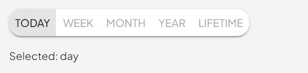
All Periods
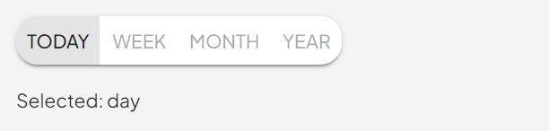
With Mandatory
O12
PriorityMatrix
legacy · no screen uses itpackages/ui/organisms/PriorityMatrix
DefaultEditable
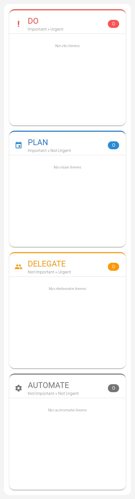
With Labels
O13
RoutineSheet
legacy · no screen uses itpackages/ui/organisms/RoutineSheet
One overlay, two shapes. Phone/tablet get a bottom sheet (radius 16 top, `0 -8px 24px rgba(0,0,0,.18)`); desktop gets a centred 480px dialog with radius 20. Both over a `rgba(0,0,0,.32)` scrim.
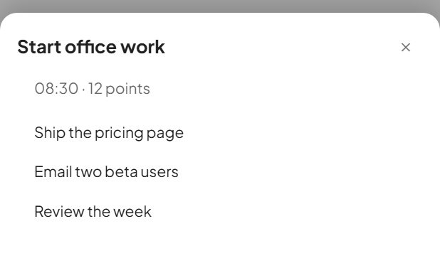
Phone
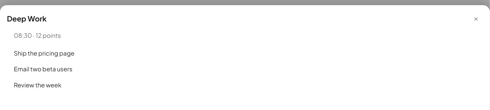
Tablet
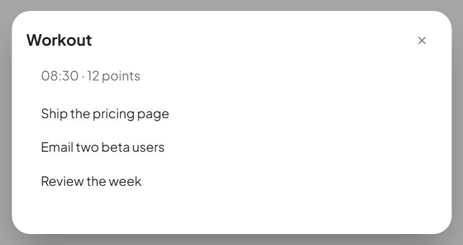
Desktop
O14
SimpleDialog
legacy · no screen uses itpackages/ui/organisms/SimpleDialog
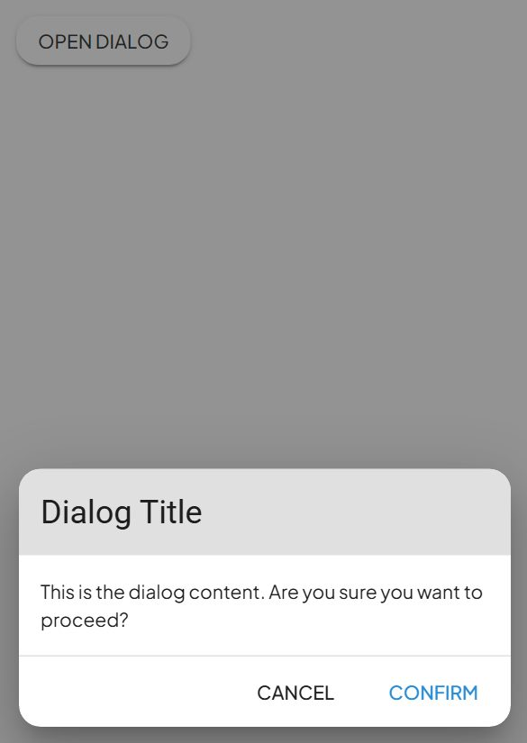
Default
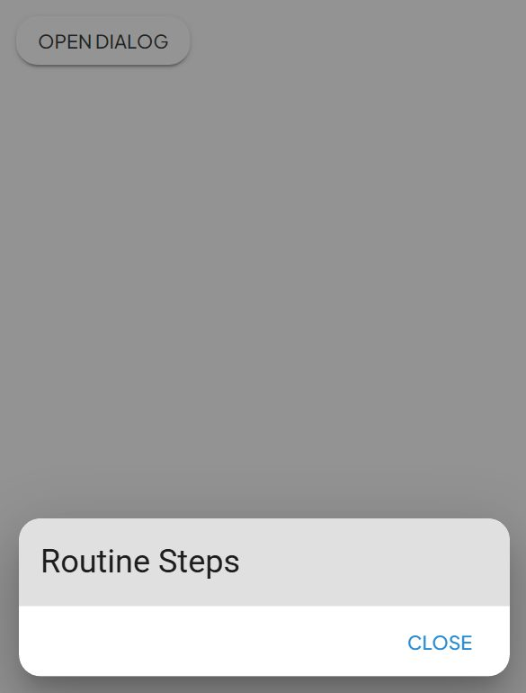
Steps Dialog
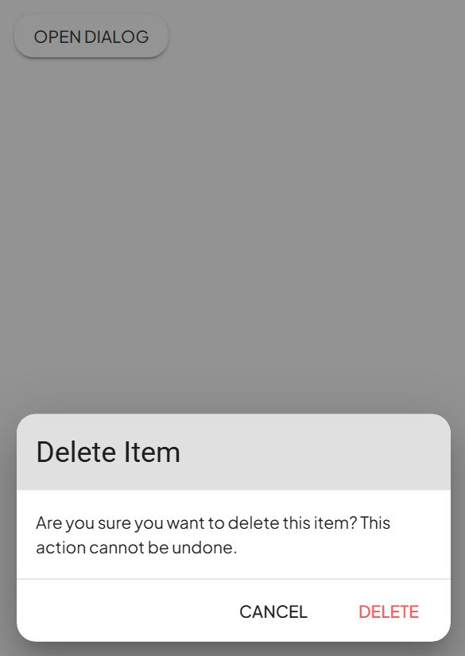
Delete Confirmation
O15
StimulusSummary
legacy · no screen uses itpackages/ui/organisms/StimulusSummary
Presentational D/K/G stimulus summary — three stacked progress circles. Pure: values in, nothing else. The container derives D/K/G and feeds them.
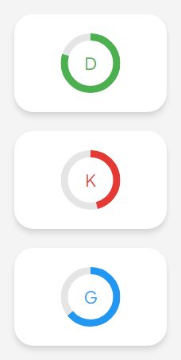
Default
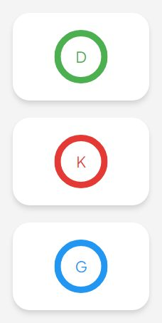
Balanced
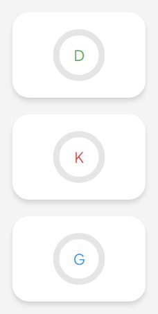
Empty
O16
SummaryCards
legacy · no screen uses itpackages/ui/organisms/SummaryCards
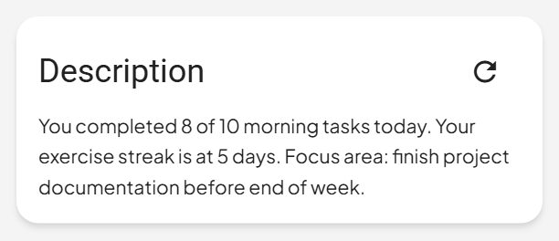
Default
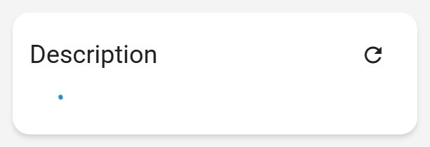
Loading
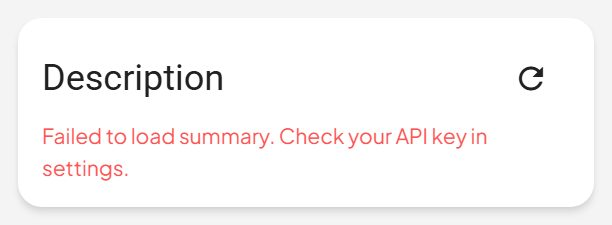
With Error
O17
TaskTile
legacy · no screen uses itpackages/ui/organisms/TaskTile
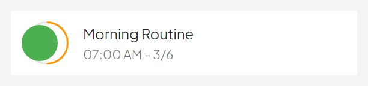
Default
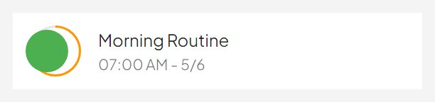
Active
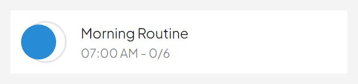
Not Started
O18
TitleOptions
legacy · no screen uses itpackages/ui/organisms/TitleOptions
Presentational day-header row for the dashboard: the date title plus its action cluster. On "today" it shows the wake toggle + skip-day switch + refresh; on any other date it shows just refresh. Props in, events out — no store / Apollo (the page owns skipDay state + the skipRoutine mutation and the refresh side-effect).
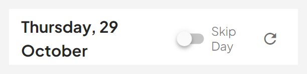
TodayToday Skipped
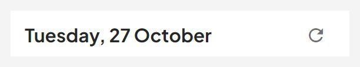
Other Day
O19
UpcomingPastTasks
legacy · no screen uses itpackages/ui/organisms/UpcomingPastTasks
Forward GoalItemList's two-argument toggle-goal-display-dialog event up to the dashboard. Method binding (vs. an inline arrow) is required because Vue 2 templates lose `this` inside arrow function expressions, leading to `Cannot read properties of undefined (reading '_events')` on $emit.
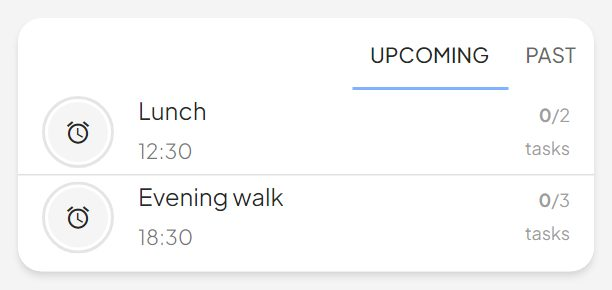
Upcoming Default
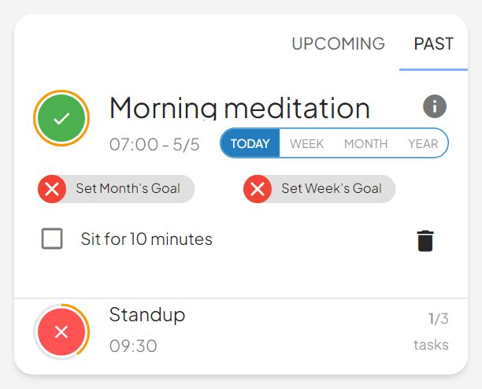
Past With Selection
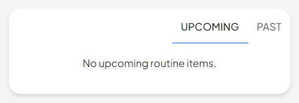
Empty State
O20
UserHistory
legacy · no screen uses itpackages/ui/organisms/UserHistory
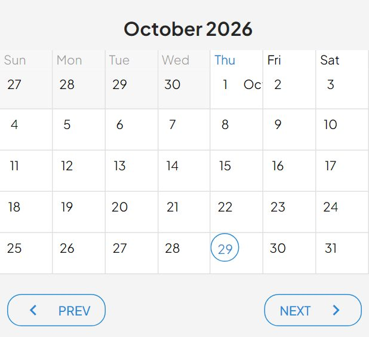
DefaultEmpty State
O21
WeekGoalStreak
legacy · no screen uses itpackages/ui/organisms/WeekGoalStreak